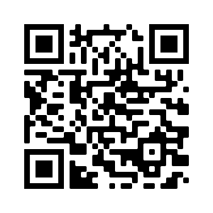
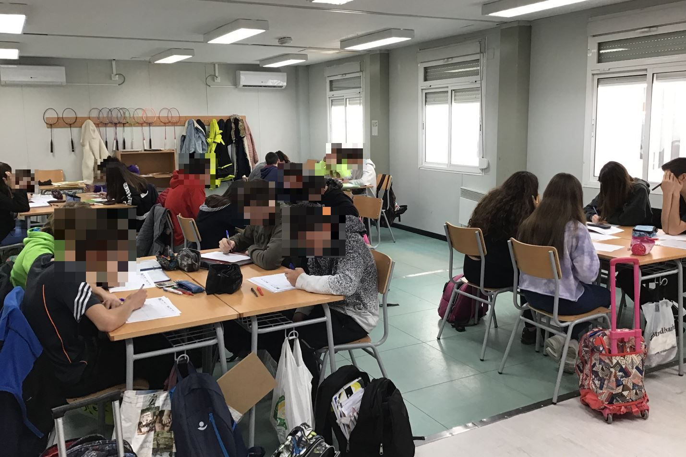
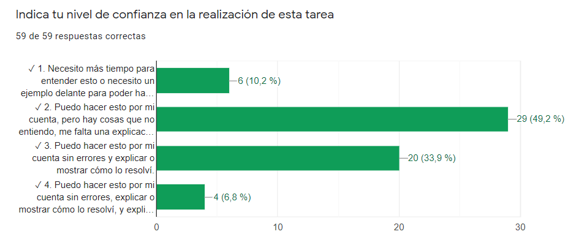

En busca de la coherencia metodológica en la educación de emergencia
A través de la resolución de problemas en matemáticas
Pablo Beltrán-Pellicer¹ ² & Ana Isabel Martínez Pérez¹
¹CPI Val de la Atalaya (María de Huerva, Zaragoza), ²Universidad de Zaragoza
Jornada Pensadero - Fundación Promaestro
24 de octubre de 2020

https://pbeltran.github.io/2020pensadero

¿Qué es enseñar a través de la resolución de problemas?


Producciones del alumnado

Atención a la diversidad
En clase presencial puedes animar a los alumnos a realizar este tipo de observaciones, eligiendo bien las preguntas. Por eso nos alegramos de ver esto en formato online. Le preguntamos que cómo podía estar segura de lo que decía y que se animara a utilizar las herramientas de geogebra.

Después, le propusimos pensar acerca del porqué de que ocurra, que implica propiedades de la mediatriz y de ángulos, así como aspectos de perpendicularidad y semejanza.
Autoevaluaciones: percepción del alumnado
Esto son dos ejemplos de autoevaluación.

Tarea: Escaleras, super figuras y formas por formas

Tarea: Pero…¿qué es un cuadrado? (sobre definiciones)
Autoevaluaciones: ¿Qué me gustaría aprender?

Retos y dificultades
- Menor interacción.
- Atención a la diversidad.
- Pérdida de control del grado de ayuda que reciben en casa.